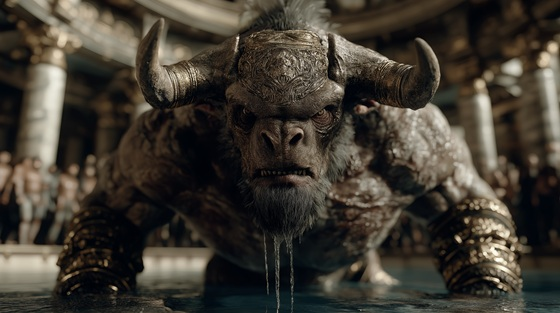

From Pasiphaë’s cursed union with the sacred bull, the Minotaur was born — a monstrous hybrid of man and beast, rejected by gods and mortals alike.
It embodied rage, guilt, and divine punishment, destined to haunt the darkness beneath Crete.
"Born of Blood and Bone" captures the terrifying birth of a creature that was never meant to live, a soul woven from despair, horror, and divine vengeance.
Born of Blood and Bone
From blood defiled, from broken cries
A shape of rage, a beast shall rise
No god shall save, no priest shall pray—
The cursed heart shall find its way
No cradle holds, no crown redeems—
The beast is born of shattered dreams
Born of blood, born of bone
A scream of gods, a soul alone
No throne shall claim, no love shall bind—
The monster tears the womb of mind
Through queen’s despair, through king’s disgrace
The creature wears no mortal face
Half flesh, half fang, half damned, half god—
The Minotaur shall walk the sod
No mother’s kiss, no father’s hand—
Shall tame the rage upon this land
Born of blood, born of bone
A scream of gods, a soul alone
No throne shall claim, no love shall bind—
The monster tears the womb of mind
The labyrinth calls, the darkness weaves
The beast shall crawl through endless dreams
A hunger deep, a terror crowned—
In blood and bone, the soul is drowned
Tear the flesh, drink the screams
Crown the dark with shattered dreams
No law, no light, no mercy sown—
The monster's heart is stone on stone
Born of blood, born of bone
The howl of gods, the soul alone
From cursed womb and broken line—
The monster stands where kings resign
Blood of stone, bone of flame—
The Minotaur shall bear no name